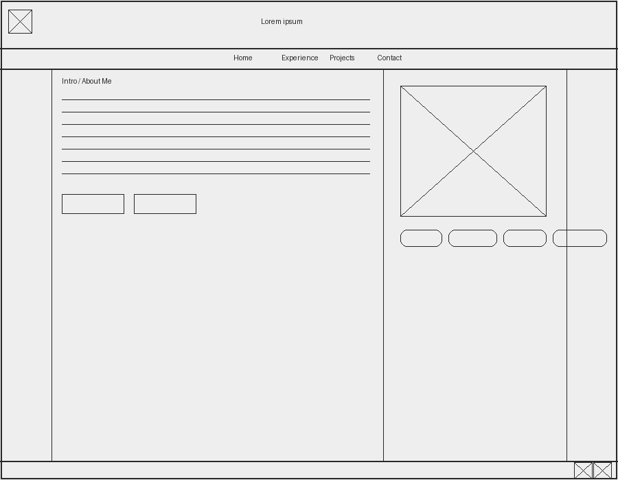
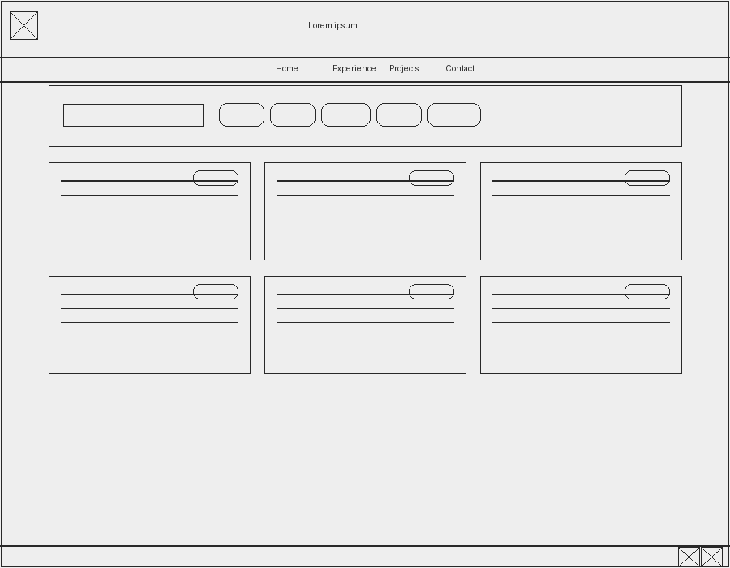
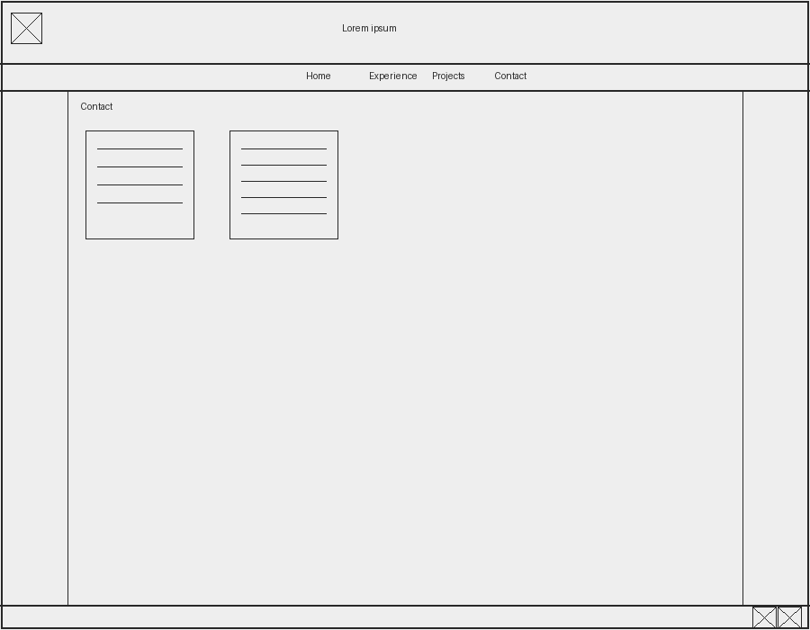

Site Name
Portfolio Project
This name works well because the site is meant to act as a professional portfolio that presents my background, skills, projects, and contact information in one place.
Purpose
The purpose of this site is to present a professional portfolio for Sam Bradshaw that highlights work experience, technical skills, and selected programming and data projects. The site will give employers, instructors, and collaborators a clear way to review my background, see the kind of work I have done, and contact me professionally.
Audience
The primary audience for this site is employers, recruiters, internship coordinators, and professional contacts who want to learn about my experience and technical abilities. A secondary audience includes classmates and instructors who may review my web development progress and project work.
Description of Dynamic Elements
JavaScript will be used most heavily on the Projects page. Project information will be stored in an array of objects and displayed dynamically in the page. Visitors will be able to search projects by keyword and filter them by category such as web, Python, data, or school work.
The site will use multiple JavaScript functions, event listeners, DOM interaction, conditional logic, arrays, objects, and array methods such as filter, map, forEach, and some. JavaScript will also be used for a responsive mobile navigation menu and for updating the current year in the footer.
Logo
The logo will appear in the header and help give the site a consistent identity across pages.
Colors and Fonts
Color Palette
| Primary | Secondary | Accent | Background |
|---|---|---|---|
| #206791 | #184d6d | #102a43 | #f8fbfd |
Typography
Heading Font: Georgia, "Times New Roman", serif
Paragraph Font: Arial, Helvetica, sans-serif
Design Rationale
The blue color palette creates a professional and trustworthy appearance. The serif heading font gives the site a polished feel, while the sans-serif body font improves readability on both mobile and desktop screens.
Content
Home Page
The home page will introduce me with a professional headline, a short biography, a list of highlighted skills, and quick links to the projects and contact pages. It will also include a profile image to make the page more personal and visually engaging.
Experience Page
The experience page will summarize my work history, responsibilities, and measurable accomplishments. It will help visitors understand my professional background in business, coordination, communication, and analysis.
Projects Page
The projects page will feature project cards with titles, descriptions, categories, technologies, and links. This page will include interactive search and filter controls built with JavaScript so users can quickly find relevant projects.
Contact Page
The contact page will provide my email, phone number, GitHub, and LinkedIn information. It will also include a short professional summary about the kinds of opportunities and collaboration I am interested in.
Images and Assets
- Logo image
- Profile image for the home page
- GitHub icon
- LinkedIn icon
Wireframes
Home Page Wireframe

Projects Page Wireframe

Contact Page Wireframe
